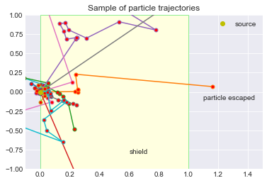

Estimate the shielding effect of an infinite homogeneous slab on a point source of neutrons. Using Monte Carlo simulation to track neutrons that leave the source.
The follow diagram should help you understand the content. We have:
A point source at the origin, emitting particles equally in all directions.
The shield is modeled as an infinite slab of width width, extending from 0 to width in the \(x-\)direction, and extending forever in the \(y-\) and \(z-\) directions. (indicated by a yellow rectangle in the following diagram (width=1)).
Particle are emitting equally in all directions (so uniform in angles NOT in \(x-\), \(y-\),\(z-\)) but we are only interested in those that are directed towards the shield. Particles have random initial energy and travel a random distance into the shield before being absorbed or scattered again.

Example of particle trajectories
We are interested in the probability of particles escaping through the shield, and how this probability is affected by the shield's width.
123456789
Shield width: 2
Number of particles: 10,000
E_min: 0.001 E_max: 2.5
State count Percent Total Energy Avg Energy StDev
================================================================================================
absorbed 3609 36.09 1240.64 0.343764 0.543185
reflected 5450 54.50 1257.94 0.230814 0.324088
transmitted 941 9.41 287.55 0.305582 0.528815
Details
The reactor is modeled as a point source, located at the origin, \((0,0,0)\).
The shield is modeled as an infinite slab of width width, extending from 0 to width in the \(x\)-direction, and extending forever in the \(y\)- and \(z\)- directions.
A particle emitted from the reactor has:
a random initial direction, subject to:
Let \(\mu\) be the cosine of the angle between the positive \(x\)-axis and neutron velocity vector, then we assumes that \(\mu\sim {\cal U}(0,1)\). This means that all particle generated will penetrate the shield and that particles are more likely to be injected along the normal to the shielding rather than along the tangent.
The azimuthal angle, \(\phi\sim{\cal U}(0, 2\pi)\). So problem is effectively two dimensional. However, it is common in reactor calculation to implement problem in 3D so we will follow that practice here.
a random energy, \(E\), where \(E_{\min}=0.001 \le E \le E_{\max}=2.5 \text{MeV}\) with \(1/\sqrt{E}\) distribution.
Based on the particle energy, a distance, distance, is computed which measures how far the particle could travel through the shield before colliding. This is called the distance to collision. The distance follows an exponential distribution with parameter \(\sigma\), called the cross section.
The cross section of a particle, with energy \(E\), is approximated by